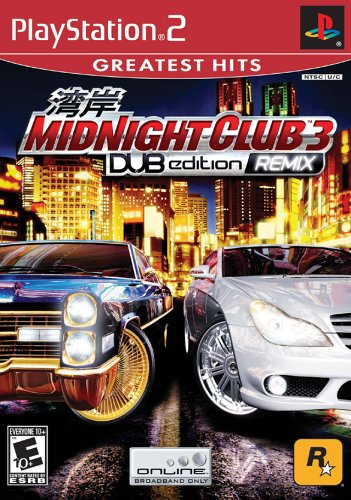

The game itself came out April 11, 2005. Since then the game has inspired a lot of young people to become interested in the japaneese tuner scene. With cars such as the Nissan Skyline, and the Toyota Supra, they caught the eyes of many young car enthusiasts. Since I first played that game, I was forever interested in cars.
Midnight Club 3 is one of the orignial street racing games. With it's fast cars, and extreme races, you will never get bored. You go through the cities to find racers. There are also regular street races and tournaments. With dozens of races to do, the fun does not stop. each race, and racer become more and more difficult as you go. Spend your money wisely and you will be sure to win every race.
You begin the game with little money, and few cars to choose from. The cars are catagorized into types of cars. There are japaneese tuner cars. Classic American muscle cars. Exotics and much more to choose from. Not only cars, but there are also choppers, and sports bikes. Win races to get money, upgrade your car, and unlock other cars. Earn money to ungrade your vehicles performance so each upcoming racer it not impossible.
Once you start to beat racers, you can unlock different cities. You begin in San Diego, and Tokyo. You then unlcok Atlanta. Finally the city of detroit. Each has ther own unique races, and recers. The more you beat, the more cars, and cities you unlock. Not only that but all vehicles in the game are fully costomizable.